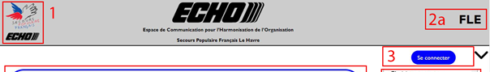
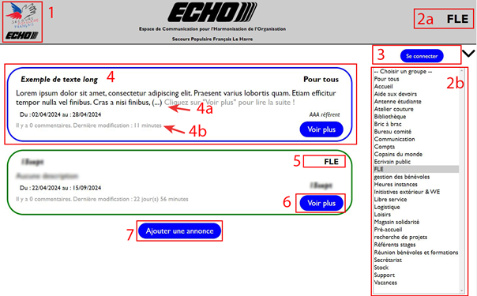
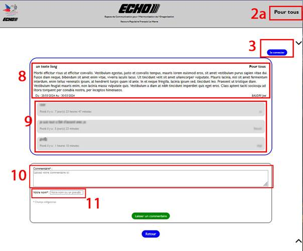
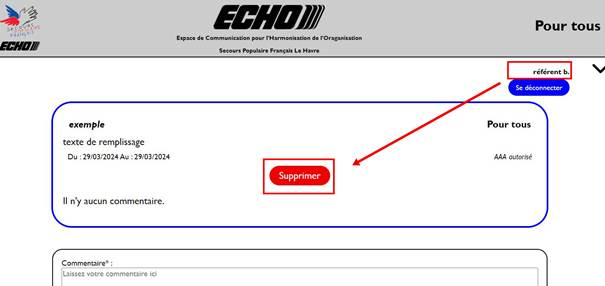
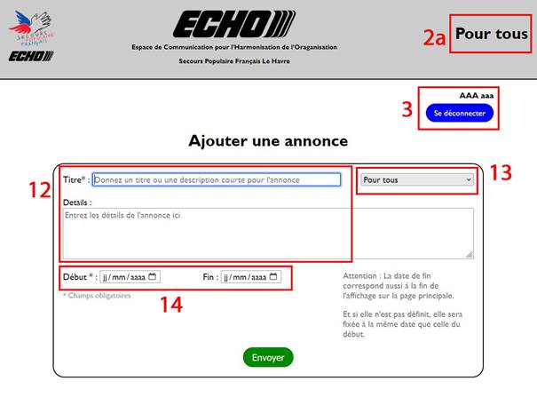
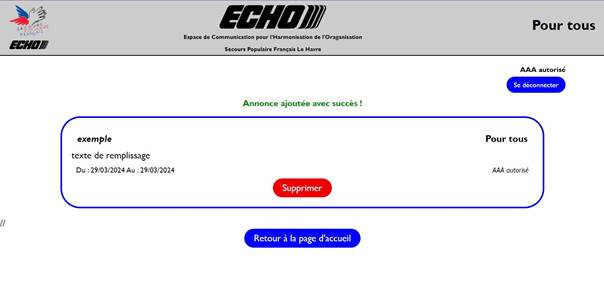
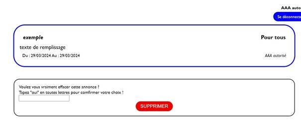

Table
des matières
Introduction
Page
d'accueil
Voir
plus
Ajout
d'une annonce
Page
de confirmation de suppression
Fonctionnalités
principales :
- Publication
d'annonces : Les
Référents peuvent diffuser des messages et des informations à destination
d'un groupe spécifique ou de l'ensemble des utilisateurs.
- Commentaires
: Chaque
annonce peut être commentée par tous les utilisateurs, favorisant ainsi
l'échange et la collaboration.
- Centralisation
des informations : Echo offre un espace unique pour
retrouver toutes les annonces et les commentaires, facilitant la recherche
et l’accès aux informations importantes.
Éléments présents sur
toutes les pages

- Logo
SPF et Echo (en
haut à gauche) 1
: un clic sur l'un des logos redirige vers la page d'accueil.
- Groupe
actif (en
haut à droite) 2a :
affiche le nom du groupe sélectionné par l'utilisateur ou le dernier
utilisé lors de la session précédente.
- Utilisateur
connecté 3 (en haut à droite, sous le
groupe actif) :
- Si
l'utilisateur est connecté, son nom s'affiche avec un bouton de
déconnexion.
- Si
l'utilisateur n'est pas connecté, un bouton de connexion est affiché.
Description
La
page d'accueil est la première page que les utilisateurs voient lorsqu'ils se
connectent à Windows. Elle affiche les messages importants 4
pour tous les bénévoles et pour le groupe sélectionné 2a.

Fonctionnalités
Affichage des messages
- Pour
tous les bénévoles : messages importants concernant l'ensemble
des bénévoles, reconnaissables par le mot-clé "Pour tous" en
haut à droite 5 et
une bordure bleue.
- Pour
tous les bénévoles : messages importants concernant l'ensemble
des bénévoles, reconnaissables par le mot-clé "Pour tous" en
haut à droite 5 et
une bordure bleue.
- Pour
le groupe sélectionné : messages spécifiques au groupe actif,
reconnaissables par le nom du groupe en haut à droite 5
et
une bordure verte.
Sélection du groupe
- Une
liste des groupes disponibles 2b
est
accessible sur la gauche de la page.
- Les
utilisateurs peuvent sélectionner un groupe 2a
pour
afficher uniquement les messages qui le concernent.
Voir plus
- Les
messages longs sont tronqués 4a et un
bouton "Voir plus" 6
permet
de les afficher en entier.
- Ce
bouton permet également de voir et d'ajouter des commentaires. (section Voir plus)
- Une
ligne de texte 4b
indique le nombre de commentaires et la date du dernier commentaire ajouter
pour chaque annonce.
Ajouter une annonce
- Un
bouton "ajouter une annonce" 7
est
présent en dessous des annonces.
- Ce
bouton renvoi vers le formulaire d'ajout d'une annonce (section Ajouter
une annonce)
- Cette
possibilité n'étant que pour les référents, si vous n'êtes pas encore
connecté il vous sera demander de vous identifier.
Exemple d'utilisation
Un
bénévole se connecte à l'application et voit sur la page d'accueil un message
important concernant tous les bénévoles. Il voit également un message
spécifique à son groupe. Il peut ensuite sélectionner un autre groupe dans la
liste pour afficher les messages qui le concernent.
Description
Le bouton "Voir plus" permet de lire
les annonces qui sont trop longues pour être affichées en entier sur la page
d'accueil. Elle permet également de voir et d'ajouter des commentaires aux
annonces.

Fonctionnalités
Affichage du contenu
d'une annonce
- Affiche
le contenu complet de l'annonce 8,
y compris les informations qui étaient tronquées sur la page d'accueil.
- Les
mêmes éléments que sur la page d'accueil sont présents, comme le groupe
auquel l'annonce est destinée (en haut à droite).
Affichage des
commentaires
- Les
commentaires 9 s'affichent
directement sous le corps de l'annonce principale.
- Chaque
commentaire est accompagné d'un horodatage.
Ajout d'un commentaire
- Un
formulaire 10 est
présent à la suite des commentaires pour laisser un commentaire.
- La
signature 11 du
message est obligatoire, mais si l'utilisateur est déjà connecté, ce champ
sera automatiquement rempli.
Fonctionnalité de suppression d'annonce pour les référents
Suppression d'une
annonce

Si vous êtes un référent connecté à l'application, vous verrez
un bouton "Supprimer" sur l'annonce affichée. Ce bouton vous
permet de retirer une annonce si elle devient inutile ou si elle comporte une
erreur.
Ne vous inquiétez pas si vous cliquez sur le bouton par erreur. La suppression
n'est pas immédiate. Vous serez redirigé vers une page de validation (section confirmation de suppression) où vous devrez
confirmer la suppression de l'annonce.
Voici les étapes à suivre pour supprimer une annonce :
- Connectez-vous
à l'application en tant que référent en ayant le groupe actif dont vous
êtes référent.
- Sur
la page d'accueil dans la liste des annonces, trouvez l'annonce que vous
souhaitez supprimer.
- Cliquez
sur le bouton "Voir plus" à côté de l'annonce
- Cliquez
sur le bouton "Supprimer" en dessous de l'annonce.
- Validez
la suppression de l'annonce dans la page de confirmation.
Remarques
- Seuls
les référents peuvent supprimer des annonces.
- La
suppression d'une annonce est définitive. Il n'est pas possible de la
restaurer.
Accès réservé aux référents
Seuls les référents d'un groupe peuvent accéder à cette page. Si
vous n'êtes pas référent, un message vous informera de l'impossibilité
d'ajouter une annonce et vous redirigera vers la page d'accueil. Vous pourrez
ainsi changer de groupe si vous êtes référent mais que vous n'avez pas
sélectionné le bon groupe actif.

Rédaction de l'annonce 12
- Donnez
un titre clair et concis à votre annonce.
- Écrivez
le contenu de votre annonce ou message.
- Par
défaut, l'annonce sera visible par votre groupe actif. Vous pouvez choisir
de la diffuser à un autre groupe 13,
par exemple pour un message destiné à tous.
Dates de début et de fin 14
- Vous
pouvez définir des dates de début et de fin pour votre annonce, si elle
concerne un événement ponctuel.
- Pour
un message d'information, indiquez une date de fin. Cette date détermine
la durée d'affichage de l'annonce.
Confirmation et validation

- Après
avoir validé votre annonce, une page de confirmant l'ajout s'affichera.
Vous pourrez y visualiser l'annonce.
- Un
bouton "Supprimer" est également disponible, si vous vous
apercevez que vous avez fait une erreur pour pouvoir l'effacer avant de
recommencer.
- Ne
vous inquiétez pas si vous cliquez dessus par erreur, une page de
validation supplémentaire s'affichera pour confirmer la suppression.
Description
Cette page vous permet de confirmer la suppression d'une
annonce.

Affichage du message
Le message que vous souhaitez supprimer s'affiche sur cette
page.
Formulaire de confirmation
Un petit formulaire vous permet de confirmer la suppression.
- Saisissez
"oui" dans le champ de texte.
- Cliquez
sur le bouton "Supprimer".
La Suppression est définitive
L'annonce sera définitivement supprimée après confirmation.
Annulation de la suppression
Vous pouvez annuler la suppression en revenant sur la page d'accueil
grâce au bouton "Retour à l'accueil" en bas de la page (non visible
sur la capture d'écran ci-dessus) ou les logos en haut a gauche comme sur
chaque page.